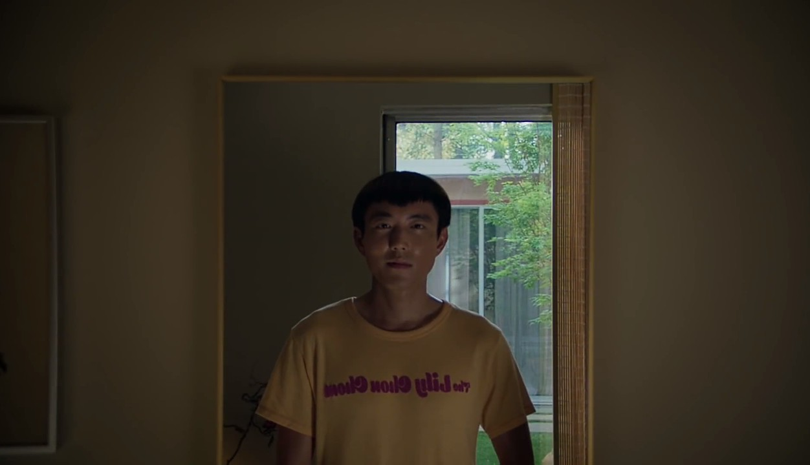

-After Yang-
ถ้าพูดถึงหนังที่เกี่ยวกับ AI หรือ ปัญญาประดิษฐ์ สิ่งทีลอยขึ้นมาบนหัวหลายๆคนก็มักจะเป็นด้านที่ไม่ดีของมัน เเละคงมีภาพของ Terminator, Exmachina หรือ iRobot ที่พร้อมจะฆ่าคุณได้ทุกเมื่อ เเต่ไม่ใช่กับ After Yang หนังเรื่องนี้กลับใช้ AI อย่าง Yang (Justin H. Min) เป็นตัวเชื่อมความสัมพันธ์ของครอบครัว รวมถึงการเชื่อมลูกบุญธรรมชาวเอเชียอย่าง Mika (Malea Emma Tjandrawidjaja) ให้เข้าใจวัฒนธรรมเเละภาษาจีนซึ่งเป็นรากฐานของเธอให้มากขึ้นด้วย.
-เเม้ว่าหนังจะเซ็ทอยู่ในยุคอนาคต เเต่ความหวือหวาทางเทคโนโลยีกลับไม่ใช่องค์ประกอบหลักของเนื้อเรื่องเเละซีนต่างๆ หากเเต่เป็นความเรียบง่ายของฉาก เทคโนโลยี เสื้อผ้า รวมถึงซาวน์ประกอบในเเต่ละซีนก็ให้ความรู้สึกสุขุมเเละร่มรื่นด้วยเช่นกัน.
-เราจะได้ทำความรู้จักกับ Yang ในช่วงต้นเรื่องเเค่ไม่กี่นาทีเท่านั้นก่อนที่เค้าจะพังลง โดยเนื้อเรื่องของ Yang หลังจากนี้จะเล่าผ่านทางเมโมรีการ์ดของเค้าเเละ Jake (Colin Farrell) ผู้เป็นพ่อ กับ Kyra (Jodie Turner Smith) ผู้เป็นเเม่ เพื่อค้นหาต้นตอการพังของ Yang นั้นเอง. ด้วยความที่เป็น AI ซึ่งความทรงจำมีพื้นที่จำกัดจึงทำให้ Yang เลือกที่จะจัดเก็บเพียงเเค่ช่วงเวลาที่สำคัญที่สุดของเเต่ละวันเท่านั้น หลายๆโมเม้นที่ Yang เลือกที่จะจดจำจึงมักจะเป็นช่วงเวลาของครอบครัวเเละคนที่เค้ารัก รวมถึงความงดงามของธรรมชาติที่เเสนจะเรียบง่ายซึ่งหลายๆครั้งมนุษย์กลับมองข้ามมันไปอย่างน่าเสียดาย ซึ่งเมื่อนำโมเม้นสั้นๆเหล่านี้มาตัดรวมกันบวกกับมีเพลงประกอบคลอเบาๆก็ทำให้เราน้ำตาซึมออกมาได้ไม่ยากเลย ทั้งนี้เองการเข้าไปค้นหาข้อบกพร่องของ Yang จึงเป็นดั่งการเดินทางย้อนอดีตสู่ช่วงเวลาเเห่งความสุขที่เรียบง่ายเเละน่าจดจำของตัวละครเเละคนดูไปพร้อมๆกัน.
*บทเรียนจาก Yang*
-กิ่งไม้- ครั้งนึง Mika ได้ตั้งคำถามกับ Yang ถึงความเเปลกเเยกของเธอจากพ่อเเม่บุญธรรมรวมถึงเชื้อชาติกำเนิดของเธอ โดย Yang ได้บอกกับเธอว่าคนเราก็เหมือนต้นไม้นั่นเเหละ Mika เองซึ่งเป็นลูกบุญธรรมก็เหมือนกับกิ่งไม้ที่ถูกนำไปทาบกิ่งเข้ากับต้นไม้อีกพันธ์ุนึง ถึงเเม้ในช่วงเเรกกิ่งที่นำมาทาบจะยังต้องใช้เทปพันหรือต้องมีที่ค้ำก็ตาม เเต่เมื่อเวลาผ่านไปมันก็สามารถกลืนไปกับต้นใหม่ได้อย่างเป็นธรรมชาติเเละพร้อมที่จะงอกงามอีกครั้ง เเต่ก็อย่าลืมที่จะให้ความสำคัญกับทั้งต้นใหม่เเละต้นที่เราจากมาด้วย
-ใบชา- ย้อนไปถึงบทสนทนาระหว่าง Jake เเละ Yang “คุณชอบอะไรเกี่ยวกับชาหรอ” Jake บอกว่าเค้าสนใจไอเดียเเละเรื่องราวของมัน กระบวนการของชานั้นเชื่อมโยงกับ ดิน พืช เเละ สภาพอากาศ รวมถึงวิถีของชีวิต เค้ายังพูดถึงสารคดีเกี่ยวกับชายผู้ตามหาชาที่ดีที่สุดในประเทศจีน “รสชาติของชานั้นไม่มีภาษาหรือคำพูดใดที่จะสามารถอธิบายธรรมชาติอันลึกลับของมันได้เลย” โดยเพื่อนชาวเยอรมันของชายคนนั้นยังได้อธิบายความรู้สึกของชาไว้ว่า “มันเหมือนกับเราเดินอยู่ในป่าที่มีใบไม้โรยอยู่ตามพื้นเเละฝนก็ตกลงมาเเละหยุดลง เเละเราก็ย่ำบนพื้นอันเปียกโชกนั้น เเละทั้งหมดนั้นอยู่ในชาเเก้วนี้” ทั้งคู่จบการสนทนาด้วยการดื่มชาจนหมดเเก้วพร้อมกับรสชาติที่ไม่อาจบรรยาย. บางทีเเล้วเสน่ห์ของบางสิ่งอาจจะไม่ใช่เเค่ Quality หรือ Beauty ที่อยู่ตรงหน้าเท่านั้น เเต่มันรวมถึง Story ของสิ่งนั้นด้วย ชาเองก็ไม่ต่างอะไรกับงานศิลปะที่คุณค่าของมันไม่ใช่เเค่ความงามเพียงอย่างเดียว เเต่มันรวมถึงเรื่องราวเบื้องหลังของมันด้วยนั่นเอง
-ผีเสื้อ- บทสนทนาระหว่าง Kyra กับ Yang ที่กำลังวุ่นกับคอลเลคชั่นผีเสื้อสตาฟอยู่นั้น ว่าด้วยการที่ Yang บอกกับ Kyra ว่าชาวจีนสมัยก่อนนั้นมีเรื่องเล่าเกี่ยวกับคู่ชายหญิงซึ่งได้ตรอมใจตายจากความรักเเละทั้งคู่ก็ได้มาเกิดใหม่เป็นผีเสื้อ รวมถึงคำพูดของเล่าจื้อที่ว่า “What the catepillar calls the end the rest of the world calls a butterfly” โดยผีเสื้อในที่นีเป็นเหมือนกับตัวเเทนของการเริ่มต้นใหม่หลังจากการดับไป. Kyra จึงถามกลับไปว่า เเล้ว Yang เองเชื่อเเบบนั้นรึป่าวว่าจุดจับก็ยังเป็นทั้งจุดเริ่มต้นเช่นกัน Yang บอกว่า ไม่รู้สิ เค้าไม่ได้ถูกโปรเเกรมมาให้เชื่อเเบบนั้น เเต่บอกตามตรงคือเค้าก็โอเคนะถ้าในจุดจบมันว่างเปล่า ถ้าถามว่ากลัวมั้ย Yang ก็ตอบเเค่ว่า "There's no somthing without nothing" อาจจะฟังดูงงๆ เอองงเหมือนกัน555 เเต่ที่ Yang พยายามจะสื่อน่าจะหมายถึงว่าสิ่งๆนึงจะไม่สามารถเกิดขึ้นมาหรือมีคุณค่าได้เลยถ้าหากปราศจากการไม่มีอยู่ กล่าวคือ การที่เราจะเห็นคุณค่าของสิ่งๆนึงได้นั้นเราอาจจะต้องเคยไม่มีสิ่งนั้นมาก่อน หรือถ้าในเคสของ Yang ซึ่งปัจจุบันได้พังไปเเล้วนั้นคงจะหมายถึงการที่ถ้า Yang ไม่ได้จากไป คนในครอบครัวนี้ก็คงไม่ได้มาหวนหาช่วงเวลาเก่าๆเเละคุณค่าของมันหรอก เพราะฉะนั้นทุกความสูญเสียเเละความว่างเปล่าล้วนมีบางสิ่งที่ดีตามมาเสมอ. 
-นอกจากบทเรียนของ Yang ข้างต้นเเล้ว เรายังได้รู้อีกว่า AI เองก็สามารถมีความรู้สึกผูกพันธ์เเละรักได้เช่นเดียวกันมนุษย์ เห็นได้จากความทรงจำที่เค้ามีร่วมกับ Aida มนุษย์โคลนสาวในความทรงจำนั่นเอง รวมถึงยังได้รู้อีกว่าจริงๆเเล้ว Yang นั้นได้ผ่านมือมาจากหลายๆครอบครัวเเละยังมีความทรงจำอันสวยงามของพวกเค้าอยู่ด้วยเช่นกัน.
-ส่วนตัวเราประทับใจงานภาพที่นำเสนอเป็น POV ของ Yang มากๆเลย มันเป็นทั้งความเรียบง่าย สวยงาม เเละน่าจดจำ จนต้องน้ำตาปริ่มเลยจริงๆ 555 แต่สุดท้ายแล้วทุกอย่างที่Vivทำไปนั้นล้วนก็เพื่อครอบครัวทั้งนั้น การกระทำอาจจะดูขมแต่ผลลัพท์และเจตจำนงนั้นล้วนเป็นรสหวานชื่นของความรักจากผู้เป็นแม่ทั้งนั้น
-อีกอย่างคือเราชอบที่เรื่องนี่ไม่ได้เรียก Yang ว่าเป็น AI เเต่กลับใช้คำว่า Technosepian ซึ่งมันทำให้หุ่นยนตร์ปัญญาประดิษฐ์ดูมีความเท่าเทียมกับ Homosepian อย่างเรามากขึ้นไปอีก เลยทำให้เรานึกถึงเรื่อง Exmachina ด้วยนะ ในซีนที่ Nathan (Oscar Isaac) บอกกับตัวเอกว่าสุดท้ายเเล้วก็จะมีซักยุคนึงที่ AI มองย้อนกลับหามนุษย์เหมือนกับที่เรามองกลับไปหามนุษย์ยุคหินนั่นเเหละ กล่าวคือ วิวัฒนาการเเละทุกๆอย่างมันไม่มีวันหยุดนิ่ง อะไรที่เคยเป็นปัจจุบันซักวันมันก็จะกลายเป็นอดีตในที่สุด.
#AfterYang
ผู้เขียน: ประยศ ปลอดภัย (Red)
ภาพประกอบ: ประยศ ปลอดภัย (Red)